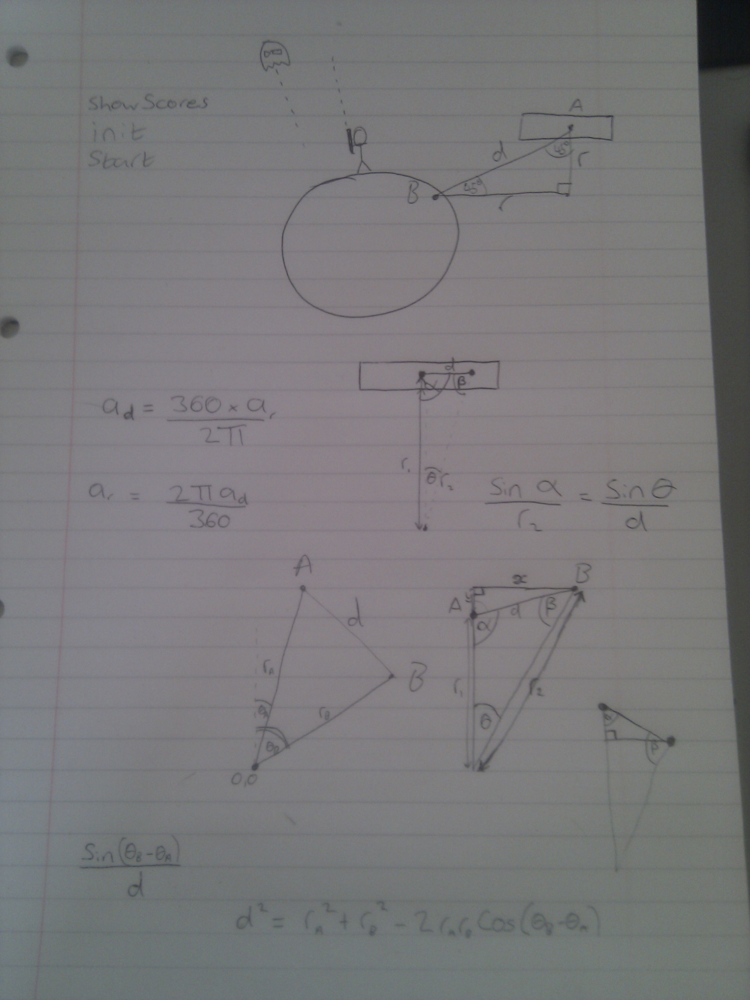
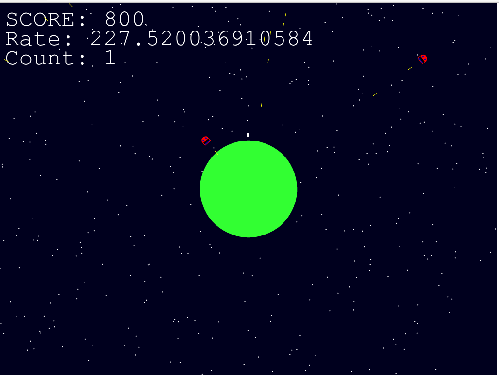
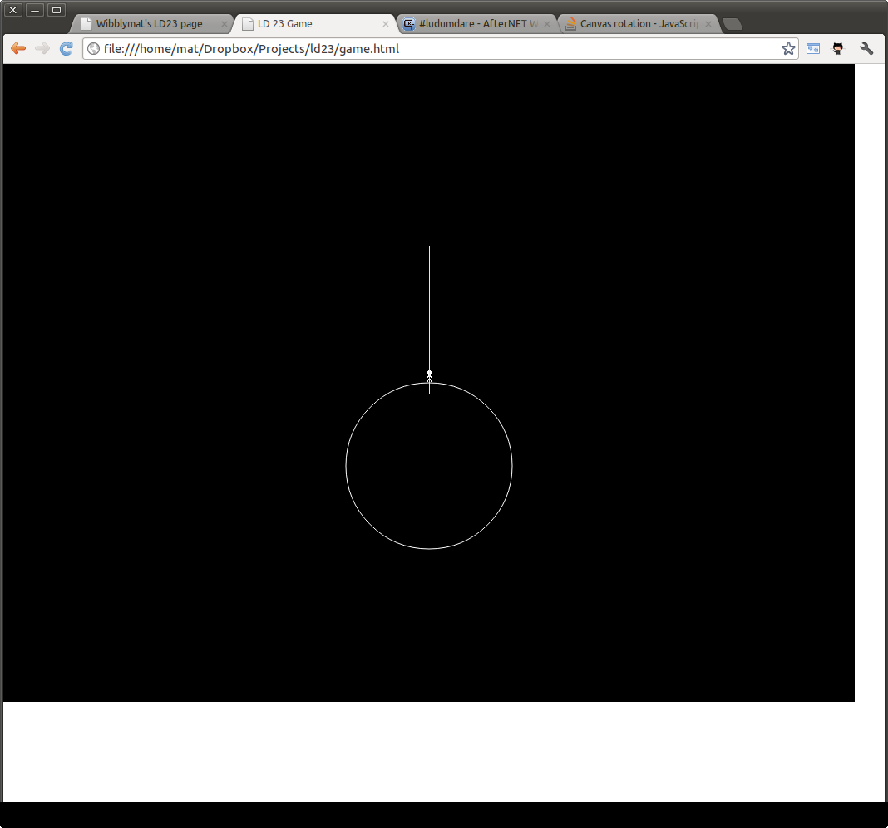

This page is a place to keep all of my information about Ludum Dare 23 together.
All of the interesting stuff can be found at the links on the left.
Since the competition hasn't started yet, there isn't a great deal to see.
The game is/will be HTML5 canvas/javascript. Development will happen in Chrome, so it is possible that it will only work in Chrome for others. Hopefully not!
I won't be using an existing game framework, though since I'm using jquery and bootstrap for this site I might possibly use them for the game too. Other tools in my toolbox are The GIMP, Inkscape, Audacity, Sublime Text 2, git, Dropbox, imagemagick and lots of pens and paper!
I've spent the morning so far working on the difficulty. On the plus side I can now survive in my own game for much longer. As a downside, this means that the memory leak has time to get really bad and kill the browser. Oops!
Other than fixing that (I think its to do with how I play sound effects) I'm now on to adding fun things. Different types of enemy and power-ups both still seem doable in the time.
I've had to put my geometry skills to use what with all of the rotations and polar to Cartesian coordinate conversions going on. Surprisingly few paper notes though. This picture of my pad shows my only page so far - including my initial design sketch.
I didn't spend as long as I would have liked to actually working on the game. My wife and son both kept me busy for several hours during the day.
Nonetheless, I have a game, something I could realistically submit for the compo, and we're still less than half way through.
Current targets for the next day will be adding some humour, making the game less difficult (or at least make it get more difficult slower) and adding any fun extra features I can think up (power-ups? different enemy types?)
Here is a screenshot of what we've got, and remember the game itself is playable here.
Hooray! After only about 3 hours coding time I have made something resembling a game, which you can play from the link at top left.
It needs a hell of a lot of polish but I have a bit more than 34 hours to do so.
Ok, I've started work on my initial idea, which is basically Space Invaders. Its boring and unoriginal but 8 hours after the compo started I didn't have anything better that I thought I could do in the time.
Anyhow, I now have the bare minimum showing on the screen for screenshot!
Decided to get plenty of sleep before the event, so went to bed super early and got up at 5am - 3 hours after the theme announcement.
Even though "Tiny World" was not one of the themes I had planned for ahead of time I was immediately inspired. I think the aesthetic idea I've had is pretty great - and simple to do - but I'm not yet sure of my gameplay. I have an idea for that too, its just a little boring. I'll give it half an hour and if I haven't thought of anything else I'll just go for it!
LD23 is a little more than a day away now, and it's time for some last minute preparation. I've mostly got things set up in terms of the website and the blog, and I got my dev environment sorted out earlier in the week.
It's a long time (8 years?) since I last seriously attempted a game at all and even back then I was only doing very small things. I think I could easily knock out in 48 hours anything that I completed back then.
Fortunately, I'm not completely rusty. I code for a living and recently I've been doing a lot of work in HTML5 canvas which has been good preparation. And since I decided to enter LD23 I've spent many hours thinking about, playing and designing games. Hopefully this will help me quickly see how to turn the theme into a game!
For the last week or so I've been speccing out a particular game that I was thinking I could shoe-horn into whatever theme comes up, but I've decided to just go with the flow and see what comes out. I can always make my other game afterwards!.
Anyway, good luck to anyone else who is taking part, and have fun.
{kind=link}
{kind=link}
{kind=link}
{kind=link}